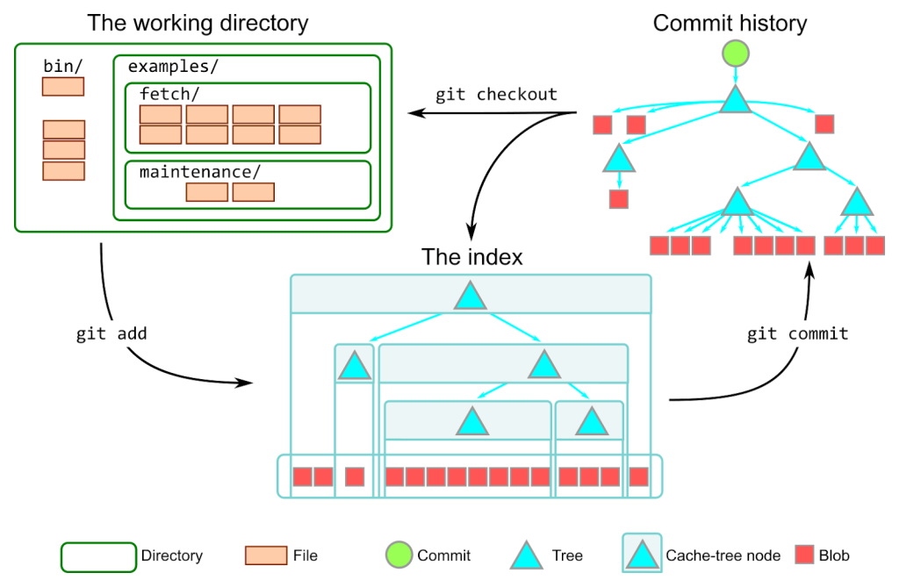
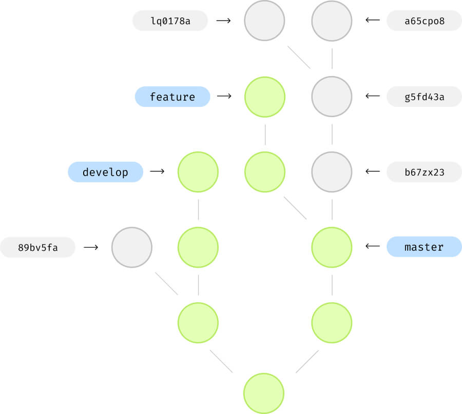

Boring preface
Git is hard for beginners. Do you have similar feelings? I think most of you can agree with that. Git was very hard for me, and after months of struggling with Git, I finally found out why.
In my opinion, the problem is about lack of a full understanding of a .git/ directory.
Git is not a blackbox, which somehow works. By uneveiling the mystery behind the .git/ directory, you will be able to freely use Git in your projects without worries.
Before we start
Install Git and make sure it works by typing: git --version
You have to learn how to use Git from the command line. If you want to understand it, you have to use it from the command line.
This guide assumes that you are familiar with the basics of Git, but it's often unclear to you how Git actually works, and how to deal with the common Git problems.
Creating a Git repository
git init creates a hidden .git/ directory in the current location.
Git determines whether you are inside a Git repository by, checking if there is a .git/ directory at the root of the directory.
Take a look what is inside .git/ directory:
$ cd .git/ && ls -al
total 32K
-rw-r--r-- 1 maciejb maciejb 23 Sep 8 13:19 HEAD
drwxr-xr-x 2 maciejb maciejb 4.0K Sep 8 13:19 branches
-rw-r--r-- 1 maciejb maciejb 92 Sep 8 13:19 config
-rw-r--r-- 1 maciejb maciejb 73 Sep 8 13:19 description
drwxr-xr-x 2 maciejb maciejb 4.0K Sep 8 13:19 hooks
drwxr-xr-x 2 maciejb maciejb 4.0K Sep 8 13:19 info
drwxr-xr-x 4 maciejb maciejb 4.0K Sep 8 13:19 objects
drwxr-xr-x 4 maciejb maciejb 4.0K Sep 8 13:19 refsFamilirize yourself with these files and directories and don't do anything else for now. We will be focusing on the objects/ and refs/ directories in the next parts.
SHA-1
Everything in Git is based on SHA-1.
It is a cryptographic hash function. You don't have to know how it mathematically works. You have to remember, that it takes any piece of text and turns it into unique 40-character string of letters and numbers. It's impossible to get back the original text from this unique string.
If you are wondering, what if SHA-1 will produce the same output for two different inputs, you can read about collisions of hash functions.
Spoiler: You will find that the probability of collision is extremly low. Also, you will learn that SHA-1 is not secure anymore, but it doesn't matter, because it is not used for security in Git.
The primary role of Git
At the lowest conceptual level, Git is just a simple key:value store.
It calculates the SHA-1 hash of the given input, which may be a text file, photo, pdf or anything else. Then it stores the input under the name of the calculated SHA-1 hash inside the .git/objects/ directory.
This explanation is very simplified, but it is enough for now, just to understand the core concept of Git.
Calculate SHA-1 in Git
We can use one of the internal Git commands to calculate the SHA-1 hash of the given input with the git hash-object command:
You can try it by yourself:
$ echo -n "can horses swim?" | git hash-object --stdin
4e91d48941493c77aa18db2cf7661c1fcb4b6ee8Another example with the text file:
$ echo -n "can horses swim?" > file.txt
$ git hash-object file.txt
4e91d48941493c77aa18db2cf7661c1fcb4b6ee8Notice: If you try to calculate SHA-1 from the same text using the hash calculation form from above and the git hash-object command, you will notice that the results are different. Why is that?
To explain this behaviour, we need to introduce some new terms.
Types of objects in Git
Everything in Git is expressed with "internal git objects".
Git has four types of objects: blob, tree, commit and tag.
Blob
Blob is a generic piece of content.
If you are using Git in your projects, your files with code are stored as Blobs inside the Git repository.
Blob is just a file, which is stored in the .git/objects/ directory.
Blob is structured as follows:
header + contentThe header consists of the object type, which in our case is a blob, a single whitespace, its content size in bytes and a NULL byte:
<object type> <size of content in bytes>\0
# Example header
blob 12\0The content is our input data (stdin, content of a file, etc.), which we want to store in the Git repository.
Creating a Blob
For instance, we want to create a Blob from the previous file.txt:
can horses swim?The blob will look like this (header + content):
blob 17\0can horses swim?The git hash-object -w command with a -w flag creates and writes the blob to the .git/objects directory.
$ mkdir test-git-blobs
$ cd test-git-blobs
$ git init
$ echo -n "can horses swim?" > file.txt
$ git hash-object -w file.txt
4e91d48941493c77aa18db2cf7661c1fcb4b6ee8Exercise: Go ahead, and find that newly created blob inside the .git/objects directory. Try to view the content of the blob.
You can play around with creating the blob using this form:
Compressing the Blob
As you may notice in the form above, there is an extra field with compression.
Git is smart enough to compress the content of the blob before it is stored in the .git/objects/ directory.
Git uses the Deflate data compression algorithm.
When Git saves the blob, it calculates the SHA-1 of the raw blow (header + content), then compresses the blob to a raw bytes and finally saves them under the name of hash:
How blobs are stored
Git groups the blobs in the directories by the first two characters of the blob. Our blob starts with the 4e prefix, so it is stored in the .git/objects/4e directory:
$ ls -l .git/objects/
total 12K
drwxr-xr-x 2 maciejb maciejb 4.0K Sep 9 09:01 4e
drwxr-xr-x 2 maciejb maciejb 4.0K Sep 8 13:19 info
drwxr-xr-x 2 maciejb maciejb 4.0K Sep 8 13:19 pack
$ ls -l .git/objects/4e
total 4.0K
-r--r--r-- 1 maciejb maciejb 32 Sep 9 09:01 91d48941493c77aa18db2cf7661c1fcb4b6ee8If you try to view the content of the file with the cat command, you will get some random characters, se we will output hex bytes, the same way as in the form above with the hexdump command:
$ hexdump -v -e '1/1 "%02x"' 91d48941493c77aa18db2cf7661c1fcb4b6ee8
78014bcac94f52303463484ecc53c8c82f2a4e2d56282ecfccb5070061a2082cOf course nobody views the blobs in the Git repository like this, I want to demonstrate that the compression works. You can compare the results to the compression bytes from the form above.
Viewing the Blob
To decompress and view any Git object, in our case the Blob, you should use the git cat-file <SHA-1> command:
Notice: The command requires the SHA-1 hash of the blob, not the file name from the filesystem. You can provide only a few first characters of SHA-1 hash, as long as it is unique.
The git cat-file with -p flag prints the content of the object, and the -t flag prints the type of the object:
# Full SHA-1 hash
$ git cat-file -p 4e91d48941493c77aa18db2cf7661c1fcb4b6ee8
can horses swim?
$ git cat-file -t 4e91d48941493c77aa18db2cf7661c1fcb4b6ee8
blob
# Short SHA-1 hash
$ git cat-file -p 4e91d489414
can horses swim?
$ git cat-file -t 4e91d4
blobNow you are familiar with the blob object.
Notice: The blob object introduced new problem - we have lost the filename, because the SHA-1 is only calculated from the content of the file, the filenames is ignored and the SHA-1 hash becomes the filename.
You will understand the solution to this problem when we start discussing tree objects.
Note on git objects
Each Git object is structured, compressed and stored (.git/objects) in the same way.
The only difference is in the object name in the header, and in the content:
# Object stucture
header + content
# Blob
blob <content size in bytes>\0<content>
# Tree
tree <content size in bytes>\0<content>
# Commit
commit <content size in bytes>\0<content>
# Tag
tag <content size in bytes>\0<content>Commits
Commit is a snapshot of your project at a given time.
commit is a second object type in Git.
Commits are stored in the .git/objects directory.
To explain the commit object, we need to prepare some files and directories in our git repository.
Create a new directory and follow the instructions. Don't worry if you don't know the commands, we will cover them later.
$ mkdir git-commits
$ cd git-commits
$ git init
$ mkdir dir1 dir2
$ echo -n "new file 1" > dir1/file1.txt
$ echo -n "new file 2" > dir2/file2.txt
$ echo -n "new file 3" > file3.txt
$ git add .
$ git commit -m "Init commit"
$ echo -n "new file 4" > file4.txt
$ git add .
$ git commit -m "Second commit"
$ git log
$ q
What happened:
- the command git add . marked the new files as ready to commit
- the command git commit -m "Init commit" saved them to the git repository with message "Init commit".
- the command git log displayed list of commits
Take a look at the git log output:
$ git log
commit 6bef83cf8560f8fc4994279afae86635cf1c394c (HEAD -> master)
Author: Maciej Biel <example@email.com>
Date: Sun Sep 10 10:01:13 2023 +0200
Second commit
commit 5d8da6e51bc54151677ba373cea0e13c9129eb6a (HEAD -> master)
Author: Maciej Biel <example@email.com>
Date: Sun Sep 10 09:04:50 2023 +0200
Init commitDo you remember the git cat-file command from the previous sections?
Inspecting the commit
With the git cat-file command we can inspect any object in the Git repository.
Copy the SHA-1 of the commits from the git log command and inspect the type of these objects:
$ git cat-file -t 6bef83cf85
commit
$ git cat-file -t 5d8da6e51b
commitLet's print the content of the commits:
$ git cat-file -p 6bef83cf85
tree 01d7ad59ab92e3efe29f4347fe0b996d7188f580
parent 5d8da6e51bc54151677ba373cea0e13c9129eb6a
author Maciej Biel <example@email.com> 1694332873 +0200
committer Maciej Biel <example@email.com> 1694332873 +0200
Second commit
$ git cat-file -p 5d8da6e51b
tree 384a95a8d3539872c6eab82dedf3ad0cc2cf11c2
author Maciej Biel <example@email.com> 1694329490 +0200
committer Maciej Biel <example@email.com> 1694329490 +0200
Init commitStructure of the commit
Commits are always structured in the same way:
- bunch of headers like: tree, parent, author, etc.
- newline \n
- commit message
Parents of the commit
parent 5d8da6e51bc54151677ba373cea0e13c9129eb6aThe commit may have zero or multiple parent headers.
When the commit is the first commit in the Git repository, it doesn't have a parent header (5d8da6e51b from previous section). It is the only commit in the repository without a parent header.
Each next commit must reference it's previous commit using a parent header and SHA-1 of the previous commit.
When the commit has multiple parents, it means that it is a merge commit, and it was created from multiple previous commits. We will talk about merging strategies later.
Commits are chained together using the parent header. That means, Git history is not a tree, but a DAG (Directed Acyclic Graph).
Author and commiter of the commit
author Maciej Biel <example@email.com> 1694329490 +0200
committer Maciej Biel <example@email.com> 1694329490 +0200The author is the person who wrote the code changes, while the committer is the one who added them to the repository.
For instance a commiter might be a GitHub when merging a pull request.
Tree
The tree is a thrid type of Git objects.
The tree is very similar to a UNIX directory.
Combination of blobs and trees is used to reflect the project file structure within Git.
All the content from the commit (files added to git during creation of commit) is stored using only blobs or trees.
Let's inspect the tree header from the 5d8da6e51b commit:
# Inspecting the commit
$ git cat-file -p 5d8da6e51b
...
tree 384a95a8d3539872c6eab82dedf3ad0cc2cf11c2
...# Inspecting the tree type
$ git cat-file -t 384a95a8d3
tree
# Inspecting the tree
$ git cat-file -p 384a95a8d3539
040000 tree cc0fea78ece05cc37dae4d302b4b3a0301595eb9 dir1
040000 tree ef56f0a20f52ca47f13c8c5a72d6b7a3a22a3534 dir2
100644 blob b037b2f50c795358d208ffb853999c7d14257773 file3.txtDuring creation of the commit, Git creates a tree object, which contains all the files and directories, starting from the root directory of the project, and writes them to the .git/objects directory.
The tree object solves the problem with missing filename during creation of the blob.
We can lookup the tree object corresponding to dir1 directory:
$ git cat-file -p cc0fea78ece05c
100644 blob 4988b5e6c604b490401d0a1be9f6f8025b60781c file1.txtBlobs are always leafs in the tree structure.
Structure of the tree row
040000 tree cc0fea78ece05cc37dae4d302b4b3a0301595eb9 dir1Let's take a look at the first row. It consits of:
- 040000 - file mode
- tree - object type (tree or blob)
- cc0fea78ece05cc37dae4d302b4b3a0301595eb9 - SHA-1 of the saved object in the .git/objects
- dir1 - name of the file / directory
Space efficiency in commits
Take a look at the SHA-1 of the file3.txt in the tree from first commit and from the second commit. It didn't change. The same goes for the dir1, dir2 directories and blobs inside them.
# Second commit
$ git cat-file -p 01d7ad59ab92e3efe2
040000 tree cc0fea78ece05cc37dae4d302b4b3a0301595eb9 dir1
040000 tree ef56f0a20f52ca47f13c8c5a72d6b7a3a22a3534 dir2
100644 blob b037b2f50c795358d208ffb853999c7d14257773 file3.txt
100644 blob 86825070f391e4be005bc2c73f91057cc7e94b28 file4.txt
# First commit tree
$ git cat-file -p 384a95a8d353987
040000 tree cc0fea78ece05cc37dae4d302b4b3a0301595eb9 dir1
040000 tree ef56f0a20f52ca47f13c8c5a72d6b7a3a22a3534 dir2
100644 blob b037b2f50c795358d208ffb853999c7d14257773 file3.txtGit saves space by referencing in the next commits objects, which SHA-1 didn't change.
For instance, if the content of file3.txt will change, Git wil create a new blob with a new SHA-1, and will reference it in the next commit.
Commits uneveiled
That's all about commits! No more magic behind the scenes. You can always at any time inspect any Git object in the repository. The only thing you need is an SHA-1 of the object and that's it!
Let's summarize what we have learned to that point:
- .git/objects is a directory, which acts as a database for Git objects.
- blobs, trees and commits are object types in Git, which are stored in the .git/objects directory.
- commit is a snapshot of your project, has a reference to the main tree object, which contains whole working directory structure, and a reference to a parent commit.
- tree acts as a directory, contains other trees and blobs with their names.
- blob is a generic piece of content, used to store any file from the working directory.
Loose objects and compression
Let's take a look at the .git/objects directory and inspect the files after creating the commits in the previous section:
ls -l .git/objects
total 48
drwxr-xr-x 2 maciejb maciejb 4096 Sep 10 10:01 01
drwxr-xr-x 2 maciejb maciejb 4096 Sep 10 09:04 38
drwxr-xr-x 2 maciejb maciejb 4096 Sep 10 09:04 49
drwxr-xr-x 2 maciejb maciejb 4096 Sep 10 09:04 5d
drwxr-xr-x 2 maciejb maciejb 4096 Sep 10 10:01 6b
drwxr-xr-x 2 maciejb maciejb 4096 Sep 10 10:01 86
drwxr-xr-x 2 maciejb maciejb 4096 Sep 10 09:04 8c
drwxr-xr-x 2 maciejb maciejb 4096 Sep 10 09:04 b0
drwxr-xr-x 2 maciejb maciejb 4096 Sep 10 09:04 cc
drwxr-xr-x 2 maciejb maciejb 4096 Sep 10 09:04 ef
drwxr-xr-x 2 maciejb maciejb 4096 Sep 10 09:04 info
drwxr-xr-x 2 maciejb maciejb 4096 Sep 10 09:04 packAll single files in the first ten directories, except the info and pack directories, are called loose objects.
Packfiles
Every object with different SHA-1 in Git repository is stored as a separate object.
Dealing with lots of small files on disk is very inefficient. Sending these files over the network too (have you ever pushed node_modules/ to GitHub 😂)?
Let's assume, we have a very long file which takes up 100KB of space on the disk. We commit it and then make a change in only one character in the file, so in the next commit, the SHA-1 will change.
Even though 99.9% of the file is the same as before, Git must create a copy of the 100KB file in the next commit. This sound very space inefficient.
Fortunately, Git has a solution for this problem. To save space, Git combines multiple objects into a single file called a packfile.
Packing objects
Git has a built-in garbarge collector, which runs from time to time (for instance on git push) and packs all the loose objects into a single packfiles. This happens automatically, and we don't have to worry about it.
For learning purposes, we will pack the objects manually. To do that, we will use the git gc command:
$ ls -l .git/objects
total 48
drwxr-xr-x 2 maciejb maciejb 4096 Sep 10 10:01 01
drwxr-xr-x 2 maciejb maciejb 4096 Sep 10 09:04 38
drwxr-xr-x 2 maciejb maciejb 4096 Sep 10 09:04 49
drwxr-xr-x 2 maciejb maciejb 4096 Sep 10 09:04 5d
drwxr-xr-x 2 maciejb maciejb 4096 Sep 10 10:01 6b
drwxr-xr-x 2 maciejb maciejb 4096 Sep 10 10:01 86
drwxr-xr-x 2 maciejb maciejb 4096 Sep 10 09:04 8c
drwxr-xr-x 2 maciejb maciejb 4096 Sep 10 09:04 b0
drwxr-xr-x 2 maciejb maciejb 4096 Sep 10 09:04 cc
drwxr-xr-x 2 maciejb maciejb 4096 Sep 10 09:04 ef
drwxr-xr-x 2 maciejb maciejb 4096 Sep 10 09:04 info
drwxr-xr-x 2 maciejb maciejb 4096 Sep 10 09:04 pack
$ git gc
Enumerating objects: 10, done.
Counting objects: 100% (10/10), done.
Delta compression using up to 6 threads
Compressing objects: 100% (4/4), done.
Writing objects: 100% (10/10), done.
Total 10 (delta 1), reused 0 (delta 0)
$ ls -l .git/objects
total 8
drwxr-xr-x 2 maciejb maciejb 4096 Sep 10 16:58 info
drwxr-xr-x 2 maciejb maciejb 4096 Sep 10 16:58 pack
$ ls -l .git/objects/pack
total 8
-r--r--r-- 1 maciejb maciejb 1352 Sep 10 16:58 pack-8d7a7a9ff4d59f249dd1d0f5963ab59402e0e2ca.idx
-r--r--r-- 1 maciejb maciejb 630 Sep 10 16:58 pack-8d7a7a9ff4d59f249dd1d0f5963ab59402e0e2ca.packAs you can see, Git packed all loose objects into single packfile and packfile index.
Usually, there won't be any loose objects in the .git/objects directory, because the objects are stored in the packfiles.
Packfile and Packfile Index
Thanks to packfiles, Git stores original objects once and then stores only a differences between new objects and original ones (deltas). Everything is compressed and stored in well organized format.
Another benefit is reducing amount of small files on the disk, so it's easier to manage them and send them over the network.
pack-[sha1].pack stores packed objects with computed deltas.
pack-[sha1].idx provides an index into pack-[sha1].pack. It stores information about the objects in the packfile, including their SHA-1 hashes and the offset within the packfile where each object's compressed data starts.
In the example with one character change in 100KB file, Git won't duplicate the new blob, but will store only that one character difference compared to the original file.
This approach saves space very efficiently. You can read more about packfiles here.
The three trees
This term in Git describes, that there are three primary stages that represent the status of files in your project:
- Working Directory
- Staging Area / Index
- Local Repository / HEAD
We will cover each of these stages briefly.
Working directory
It's just a root directory, where files from your project are stored, and where Git repository is initialized. Nothing special.
Working directory is like a sandbox, where you can freely make changes, before you decide to save them to the Git repository.
Staging Area / Index
When you finish work on the files in the working directory, it would be nice to have a place, where you can prepare the commit, i.e. select files, which should be included in the commit, review them and when everthing is ready, save them to the repository.
It's a place between the working directory and the local repository, where you can prepare and review files for the commit. It's your proposed next commit. That's exactly what the staging area (also called index) is for.
The command git add is used to add files to the staging area.
How does the staging area work? It's not a separate place somewhere in the repository, but it is a file called .git/index.
How does the Index works?
.git/index is a binary file, which stores entries about files in the repository and their hashes with some metadata.
What does the .git/index do:
- It stores the current snapshot of all files added to the repository or to the index, sorted ascending by the relative path to the root directory of the project.
- When creating a commit, the tree object, that will be included in the commit, is created based on the content of the .git/index.
- It allows for quick comparison of changes between the working directory / HEAD and the content of the index.
- It stores information about merge conflicts, when they occur.
.git/index is updated when adding or removing files from the staging area and the local repository or when switching between branches.
We can view only partial content of the .git/index file with the git ls-files command:
$ git ls-files --stage
100644 4988b5e6c604b490401d0a1be9f6f8025b60781c 0 dir1/file1.txt
100644 8c7f7ff45b68b6e818f2d4bc3ae6f43332d3ecf7 0 dir2/file2.txt
100644 b037b2f50c795358d208ffb853999c7d14257773 0 file3.txt
100644 86825070f391e4be005bc2c73f91057cc7e94b28 0 file4.txt
$ git ls-files --debug
dir1/file1.txt
ctime: 1694688473:191235061
mtime: 1694688473:191235061
dev: 2080 ino: 839071
uid: 1000 gid: 1000
size: 10 flags: 0
dir2/file2.txt
ctime: 1694688473:191235061
mtime: 1694688473:191235061
dev: 2080 ino: 839072
uid: 1000 gid: 1000
size: 10 flags: 0
file3.txt
ctime: 1694688473:191235061
mtime: 1694688473:191235061
dev: 2080 ino: 839073
uid: 1000 gid: 1000
size: 10 flags: 0
file4.txt
ctime: 1694688473:201235061
mtime: 1694688473:201235061
dev: 2080 ino: 839090
uid: 1000 gid: 1000
size: 10 flags: 0Not every property is displayed with the git ls-files command. For each file, .git/index stores following properties:
- ctime - [seconds]:[nanoseconds] - the last time when the file's metadata changed.
- mtime - [seconds]:[nanoseconds] - the last time when the file's content changed, ignoring metadata changes.
- dev - identifies hardware device where the file is stored on.
- ino - number of the file's assigned inode.
- uid, uid - user's id and group id.
- fname - filename with a relative path.
- flags - we will talk about it in the merge conflicts section.
Adding new files to the Index
In this section, you can observe, how does the .git/index works in action, and how it's content change when files are added and commited.
Take a look at this scenario:
$ echo -n "new file 5" > file5.txt
$ ll .git/objects
total 8.0K
drwxr-xr-x 2 maciejb maciejb 4.0K Sep 11 15:55 info
drwxr-xr-x 2 maciejb maciejb 4.0K Sep 11 15:55 pack
$ git ls-files --stage
100644 4988b5e6c604b490401d0a1be9f6f8025b60781c 0 dir1/file1.txt
100644 8c7f7ff45b68b6e818f2d4bc3ae6f43332d3ecf7 0 dir2/file2.txt
100644 b037b2f50c795358d208ffb853999c7d14257773 0 file3.txt
100644 86825070f391e4be005bc2c73f91057cc7e94b28 0 file4.txt
$ git status
On branch master
Untracked files:
(use "git add <file>..." to include in what will be committed)
file5.txt
nothing added to commit but untracked files present (use "git add" to track)
$ git add file5.txt
$ git status
On branch master
Changes to be committed:
(use "git restore --staged <file>..." to unstage)
new file: file5.txt
$ ll .git/objects
total 12K
drwxr-xr-x 2 maciejb maciejb 4.0K Sep 11 15:42 14
drwxr-xr-x 2 maciejb maciejb 4.0K Sep 11 15:41 info
drwxr-xr-x 2 maciejb maciejb 4.0K Sep 11 15:41 pack
$ git ls-files --stage
100644 4988b5e6c604b490401d0a1be9f6f8025b60781c 0 dir1/file1.txt
100644 8c7f7ff45b68b6e818f2d4bc3ae6f43332d3ecf7 0 dir2/file2.txt
100644 b037b2f50c795358d208ffb853999c7d14257773 0 file3.txt
100644 86825070f391e4be005bc2c73f91057cc7e94b28 0 file4.txt
100644 1463a3913b7f3ed15583d64cf7fb528e1cb39634 0 file5.txtLet's explain what happened:
- We added a new file file5.txt.
- No new objects in .git/objects/ were created at this point.
- File is not included in the .git/index.
- The new file is untracked in git status.
- We staged the file using the git add command.
- The new file is now staged in the repository.
- A new object was created in the .git/objects/ directory for file5.txt. This action was performed by the .git/index.
- A new entry was added to the .git/index for file5.txt.
Now, lets modify the file5.txt and add it again to the repository:
$ echo -n "new file 6" > file5.txt
$ git status
On branch master
Changes to be committed:
(use "git restore --staged <file>..." to unstage)
new file: file5.txt
Changes not staged for commit:
(use "git add <file>..." to update what will be committed)
(use "git restore <file>..." to discard changes in working directory)
modified: file5.txt
$ ll .git/objects
total 12K
drwxr-xr-x 2 maciejb maciejb 4.0K Sep 11 15:42 14
drwxr-xr-x 2 maciejb maciejb 4.0K Sep 11 15:41 info
drwxr-xr-x 2 maciejb maciejb 4.0K Sep 11 15:41 pack
$ git ls-files --stage
100644 4988b5e6c604b490401d0a1be9f6f8025b60781c 0 dir1/file1.txt
100644 8c7f7ff45b68b6e818f2d4bc3ae6f43332d3ecf7 0 dir2/file2.txt
100644 b037b2f50c795358d208ffb853999c7d14257773 0 file3.txt
100644 86825070f391e4be005bc2c73f91057cc7e94b28 0 file4.txt
100644 1463a3913b7f3ed15583d64cf7fb528e1cb39634 0 file5.txt
$ git add file5.txt
$ ll .git/objects
total 16K
drwxr-xr-x 2 maciejb maciejb 4.0K Sep 11 15:42 14
drwxr-xr-x 2 maciejb maciejb 4.0K Sep 11 15:45 d7
drwxr-xr-x 2 maciejb maciejb 4.0K Sep 11 15:41 info
drwxr-xr-x 2 maciejb maciejb 4.0K Sep 11 15:41 pack
$ git ls-files --stage
100644 4988b5e6c604b490401d0a1be9f6f8025b60781c 0 dir1/file1.txt
100644 8c7f7ff45b68b6e818f2d4bc3ae6f43332d3ecf7 0 dir2/file2.txt
100644 b037b2f50c795358d208ffb853999c7d14257773 0 file3.txt
100644 86825070f391e4be005bc2c73f91057cc7e94b28 0 file4.txt
100644 d7bd1b39072cb3ddc0e503f51aab7e7e0e39539b 0 file5.txtWhat happened this time:
- We modified the content of the file5.txt.
- In the git status, previous version of the file5.txt is still staged (is added to the .git/index), new version appears as modified.
- The .git/index shows entry with version of file5.txt before modification.
- We stage the file again using the git add command.
- The .git/index is updated with the new version of the file5.txt.
- In the .git/objects/ we can see previous version of the file5.txt, which became a dangling object (an object without any reference in the repository - garbage collector will remove this file by default after 90 days).
How does Git know what status a particular file has in the working directory and whether it qualifies as "Changes to be committed" or "Changes not staged for commit"? You will find out in the next section about the git status command.
Summary about the index
Take this overview of the .git/index internals with a grain of salt.
Probably you won't use that knowledge in real life, but I recommend you to try out different scenarious by yourself if you are interested in it's underlying mechanics.
Explanation from this section is enough, if you understand the basic concept of the staging area, which is just a propose of the new commit.
Git Status
git status shows what's going on right now in the repository.
git status shows:
- state of a repository on a current branch.
- untracked files (not commited previously).
- differences between .git/index and HEAD.
- differences between .git/index and working directory.
- state of a merge conflict, if it occurs.
It's a good practice to often run this command, before performing any state altering operations.
git status is closely linked with the .git/index file, it enables identification of the current states of files in the repository.
Common states of files in the git status:
- untracked - the file is not present in the latest commit (there is no entry for this file in the .git/index).
- new file - the file is not present in the latest commit, but is staged / added to the .git/index.
- modified - the file is present in the latest commit, but it's content was modified in the working directory.
- deleted - the file is present in the latest commit, but it is deleted in the working directory.
Local repository
When the files are staged and ready to be saved to the repository, using the git commit command, they are persisted in the local repository.
The files in the local repository are commit objects in the .git/objects/ directory.
The tree in the commit object is created based on the content of the .git/index. After creating the commit, the properties in the .git/index are accordingly updated.
Branches
Branches are used as independent lines of development. But what is branch itself?
Branch is a named reference to the commit.
That's it. Sounds simple, but confusing at the same time. Let's take a closer look at the branches inside the .git/ directory.
Branches, or more precisely, references to a commits are stored inside the .git/refs/ directory.
$ ll .git/refs
total 12K
drwxr-xr-x 3 maciejb maciejb 4.0K Sep 5 16:07 heads
drwxr-xr-x 3 maciejb maciejb 4.0K Aug 30 09:35 remotes
drwxr-xr-x 2 maciejb maciejb 4.0K Jul 5 20:57 tags
$ ll .git/refs/heads
total 4.0K
-rw-r--r-- 1 maciejb maciejb 41 Sep 11 16:50 masterInside the .git/refs directory there are three other directories:
- heads - stores local branches.
- remotes - stores remote branches.
- tags - stores lightweight tags, we will talk about them later.
Let's take a closer look at the local branches:
$ ll .git/refs/heads
total 4.0K
-rw-r--r-- 1 maciejb maciejb 41 Sep 11 16:50 master
$ cat .git/refs/heads/master
bf44270dcf4abb61d7c5062123bb054a3770f8ddWhen the repository is initialized, the default branch is created, usually called master or main.
A branch is a text file, which name is the name of the branch, and the content is the SHA-1 of the commit, which the branch points to. It's that simple.
When a new commit is created, the branch we are currently on is updated with the SHA-1 of the new commit, so the branch moves forward with each new commit.
HEAD
How do Git know on which branch we are currently on? It's stored in the .git/HEAD file.
$ cat .git/HEAD
ref: refs/heads/masterThe .git/HEAD is a text file, which stores path to a branch from the .git/refs/heads directory.
When we switch branches, the .git/HEAD is updated with the new path to the branch.
We can use the currently used branch name with the HEAD interchangeably. It will be resolved to the SHA-1 of the commit, which the branch points to.
$ git cat-file -p HEAD
tree ca832d9a2eda0108a3364a250a07a9124ff33fd1
parent aa656d4a755d144e68571585e33bf9c67a0b247c
author Maciej Biel <example@email.com> 1694443839 +0200
committer Maciej Biel <example@email.com> 1694443839 +0200
Third commit
$ git cat-file -p master
tree ca832d9a2eda0108a3364a250a07a9124ff33fd1
parent aa656d4a755d144e68571585e33bf9c67a0b247c
author Maciej Biel <example@email.com> 1694443839 +0200
committer Maciej Biel <example@email.com> 1694443839 +0200
Third commit
$ git cat-file -p bf44270
tree ca832d9a2eda0108a3364a250a07a9124ff33fd1
parent aa656d4a755d144e68571585e33bf9c67a0b247c
author Maciej Biel <example@email.com> 1694443839 +0200
committer Maciej Biel <example@email.com> 1694443839 +0200
Third commitPacked Refs
By default, all references are stored inside the .git/refs directory.
One day you may notice, that the there aren't any references inside the .git/refs.
It's because single references are the same loose objects, like objects from .git/objects directory, and the same problems applies to them with space and network efficiency.
References are packed into a single file called: .git/packed-refs.
The process of packing refs happens automatically, but we can do it manually with the git pack-refs command:
$ ll .git/refs/heads
total 4.0K
-rw-r--r-- 1 maciejb maciejb 41 Sep 11 16:50 master
$ git pack-refs --all
$ ll .git/refs/heads
total 0
$ cat .git/packed-refs
# pack-refs with: peeled fully-peeled sorted
bf44270dcf4abb61d7c5062123bb054a3770f8dd refs/heads/masterGit checks first, whether the branch exists in the .git/refs/ directory, then lookups the .git/packed-refs file.
Relative paths
We can use relative paths to reference commits:
-
HEAD^[num] - selects
parent header from the commit.
- HEAD^1 selects the first parent.
- HEAD^2 selects the second parent.
- HEAD^^2 selects the second parent from the previous commit.
- HEAD^2^3 selects the second parent from the commit to which HEAD points, and the third parent from the second commit.
- HEAD^^ moves back by two commits.
-
HEAD~[num] - gets back a certain
number of commits, including the
HEAD.
- HEAD~ selects previous commit.
- HEAD~1 does the same as HEAD~.
- HEAD~3 selects HEAD - 3 commit.
- HEAD~^2~2 selects a commit by going back two commits from the second parent of the previous commit.
Instead of HEAD, you can also use the branch name or the commit hash. It will work in the same way.
Reachability of the commits
Commits can be reachable or unreachable / dangling. Take a look at the diagram below:
When a branch references a commit, all of its ancestor commits (parent commits) become reachable, starting from the first commits to which the branches on the diagram points.
All of the grey commits are unreachable, because none of the branches points to them.
Important note: The unreachable commits will remain in the .git/objects/ directory in the repository for the next 90 days.
Even if you delete the branch and the commits are no longer visible in the git log, they are not deleted and will be kept in the local repository for some time.
If you know the SHA-1 of the unreachable commits (for instance from git reflog) you can still checkout to them, create a branch on that commit, and they will become reachable again.
Detached HEAD
This is a situation, when the .git/HEAD file points directly to the commit, instead to the tip of the branch.
The 89bv5fa commit in a diagram above is an example of a commit, which was created in the detached HEAD mode. None of the branches points to this commit, so it's a dangling commit.
test-repo git:(master) git checkout 89bv5fa
Note: switching to '89bv5fa'.
You are in 'detached HEAD' state. You can look around, make experimental
changes and commit them, and you can discard any commits you make in this
state without impacting any branches by switching back to a branch.
If you want to create a new branch to retain commits you create, you may
do so (now or later) by using -c with the switch command. Example:
git switch -c <new-branch-name>
Or undo this operation with:
git switch -
Turn off this advice by setting config variable advice.detachedHead to false
HEAD is now at 89bv5fa Unreachable commit
test-repo git:(89bv5fa)Any new commits created in this state will be lost after switching back to a branch, beacuse they won't be referenced by any branch (reachability).
Merging strategies
Merging in Git is the process of combining changes from one branch into another branch.
Git offers four different strategies for merging branches:
- Fast forward
- Three way merge
- Squash
- Rebase
To find differences and changes between the files, Git uses the Myers diff algorithm.
Fast forward merge
This is the simplest type of merge. The only thing that happens is that the branch pointer is moved forward.
Fast forward is by default performed when executing: git merge.
Take a look what's happening under the hood:
$ cat .git/refs/heads/master
3736ef1bf7c3e7f197d597357840f1e0b69689e5
$ cat .git/refs/heads/new_branch
8b3783ac86019bb0ab0dc5b62c3abdb8c3964485
$ git checkout master
Switched to branch ‘master’
$ git merge new_branch
Updating 3736ef1..8b3783a
Fast-forward
new_file.txt | 1 +
1 file changed, 1 insertion(+)
create mode 100644 new_file.txt
$ cat .git/refs/heads/master
8b3783ac86019bb0ab0dc5b62c3abdb8c3964485Three way merge
When we do a merge in Git, we take two commits, calculate the difference between them, and create a new merge commit.
That's what we'd call a two-way merge. However, Git actually does three comparisons, not just two.
We call it a three-way merge because Git also considers the common ancestor of those two commits. This helps us understand who made what changes and how to combine them when creating the merge commit.
It's like having a reference point to figure out what to include from both sides.
When the fast forward can't be performed, Git will fallback to three way merge, but we can explicitly specify to perform this type of merge using git merge --no-ff.
To demonstrate, why Git uses the three way merge strategy, rather than the two way merge, let's take a look at the following scenario:
Base commit:
a
b
c
Changes introduced by Commiter #1 on branch feature/1:
a <- [deleted]
b <- [modified]
c <- [modified]
Changes introduced by Commiter #2 on branch feature/2:
a <- [modified]
b <- [modified]
c <- [modified]
d <- [modified]
Two-way merge (merge feature/1 with feature2, without base commit, deletion by Commiter #1 is present again, so this merge doesn't make any sense):
a
b
c
d
Three way merge (merge feature/1 with feature2, including base commit, deletion by Commiter #1 is no longer present and this makes sense):
b
c
dMerge commit
It's a regular commit created during the merge. The only difference, is that it has more than one parent commit.
tree [hash of the merged tree]
parent [hash of the commit from main]
parent [hash of the commit from develop]
author [author name and email]
committer [committer name and email]
Merge branch '[develop]'When performing three way merge, the history of merged branch is visible in the log, because of the parent header, with reference to commits from the merged branch.
Squash merge
Squash merge combines all commits from the merged branch into a single one and creates a merge commit at the tip of the main branch.
The most important thing about the squash merge is that it creates a merge commit, which has only one parent commit.
There is no reference to commits from merged branch (only one parent header). It makes history cleaner, but we are losing information about the merged branch.
Squash command itself doesn't exist in Git (git squash), but it's an option when performing a merge or rebase --squash.
To perform a squash merge, we need to execute the command
git merge --squash.
tree [hash of the merged tree]
parent [hash of the commit from main]
author [author name and email]
committer [committer name and email]
Squashed commit of [hash1, hash2, ..., hashN]Rebase
In my opinion, rebase is the most confusing merge strategy in Git.
Take a look at the example below. We have two branches, which we want to merge.

We can perform the three way merge, which will create a merge commit. But this approach bloats the Git history. At the diagram below it looks clean, but imagine a huge codebase with hundreds of merge commits.

Solution for cleaner history is a rebase.
Rebasing is the process of moving or combining a sequence of commits to a new base commit.
Rebase takes all of the commits from the merged branch and recreates them on top of the main branch.

Warning: All of the rebased commits will have a new SHA-1.
Where does new SHA-1 come from? Take a look at the example below:
$ git log --all --decorate --oneline --graph
* 96786c8 (HEAD -> experiment) C4
| * 36cfeec (master) C3
|/
* 8df361b C1
* 5b76239 C0
$ git cat-file -p experiment
tree b8785d053b387d3875c2a9a7c01f866cd521111f
parent 8df361b8265c1efcddeed0eb1c4bde371834d539
author Maciej Biel <example@email.com> 1694503064 +0200
committer Maciej Biel <example@email.com> 1694503064 +0200
C4
$ git rebase master
First, rewinding head to replay your work on top of it...
Applying: C4
$ $ git log --all --decorate --oneline --graph
* 1fd56c1 (HEAD -> experiment) C4
* 36cfeec (master) C3
* 8df361b C1
* 5b76239 C0
$ git cat-file -p experiment
tree e2c05f73b8c3e41ada14b2b19d0c2966a1ecfd72
parent 36cfeec234eb0fd27b3e04db9800eb6aac6265d1
author Maciej Biel <example@email.com> 1694503064 +0200
committer Maciej Biel <example@email.com> 1694503262 +0200
C4
Look at the parent header in the C4 commit before and after rebase:
# Before rebase it points to C1
parent 8df361b8265c1efcddeed0eb1c4bde371834d539
# After rebase it points to C3
parent 36cfeec234eb0fd27b3e04db9800eb6aac6265d1That's why rebase is dangerous. The SHA-1 of the whole commit must be re-calculated, because the parent header changes in every rebased commit.
Rebase should be performed when pulling changes to your local branch, or when operating on multiple local branches.
Rebasing on a remote branchs, where multiple people are working on, is a really bad idea, and it will cause a lot of trouble.
Merge conflicts
When the same parts of the same file are changed in two different branches, Git won't be able to merge them automatically, and a merge conflict occurs.
Example of a merge conflict
Let's recreate the situation, when a merge conflict can occur.
A one of many real world example, when the merge conflict can occur, is when the codebase has inconsistent files formatting and they don't always end up with the newline:
$ git init
$ echo "file1" > file1.txt
$ git add file1.txt
$ git commit -m "Init commit"
$ git checkout -b feature
$ echo "file2" > file2.txt
$ git add file2.txt
$ git commit -m "Add file2 with newline"
$ git checkout master
$ echo -n "file2" > file2.txt
$ git add file2.txt
$ git commit -m "Add file2 without newline"
$ git log --all --graph --decorate --oneline
* 865a847 (HEAD -> master) Add file2 without newline
| * 72c692b (feature) Add file2 with newline
|/
* a2ac6b2 Init commitWe created a file2.txt with a newline on a feature branch and a file2.txt without a newline on a master branch.
Before merging, let's check the content of the .git/index, you will see later why:
$ git ls-files --stage
100644 08219db9b0969fa29cf16fd04df4a63964da0b69 0 file1.txt
100644 30d67d4672d5c05833b7192cc77a79eaafb5c7ad 0 file2.txtLet's perform a merge of branch feature into master, which will result in a conflict:
$ git merge feature
CONFLICT (add/add): Merge conflict in file2.txt
Auto-merging file2.txt
Automatic merge failed; fix conflicts and then commit the result.
$ cat file2.txt
<<<<<<< HEAD
file2
=======
file2
>>>>>>> featurefile2.txt from the feature branch contains on the second line of the file the newline character \n and file2.txt from the master branch doesn't even have a second line.
Git doesn't know which version of the file to use, so it leaves the decision to the user.
The file2.txt contains the conflict markers <<<<<<<, ======= and >>>>>>> which indicates the conflicting parts of the file, which we need to resolve.
What happens when the merge conflict occurs
Now we are in the middle of the merge conflict resolution. Most of the beginners at this point wants to quit using Git 😂.
When you don't know what to do, type git status. It usually gives you useful hints (just read what it says):
$ git status
On branch master
You have unmerged paths.
(fix conflicts and run "git commit")
(use "git merge --abort" to abort the merge)
Unmerged paths:
(use "git add <file>..." to mark resolution)
both added: file2.txt
no changes added to commit (use "git add" and/or "git commit -a")Good news, we can always without any consequences abort the merge with git merge --abort and start over. But we will try to resolve the conflict.
How do Git know that we are in the middle of the merge conflict?
Let's take a look, what's happening inside the .git/ directory. Some new files appeared:
$ ll .git
...
-rw-r--r-- 1 maciejb maciejb 41 Sep 13 19:53 MERGE_HEAD
-rw-r--r-- 1 maciejb maciejb 0 Sep 13 19:53 MERGE_MODE
-rw-r--r-- 1 maciejb maciejb 49 Sep 13 19:53 MERGE_MSG
...
$ cat .git/MERGE_HEAD
72c692be819987b796dddaeb19d43ef8b8bde2a6
$ cat .git/MERGE_MSG
Merge branch 'feature'
# Conflicts:
# file2.txt
$ cat .git/MERGE_MODEWhat are these files?
- MERGE_MODE - Signals Git, whether we want to force the three way merge. When we issue git merge without --no-ff parameter, this file is empty, otherwise it contains the no-ff string. You can read the source code as a proof.
- MERGE_HEAD - Existence of this file indicates, that there is ongoing merge conflict. Contains the SHA-1 hash of the commit from the tip of the branch, which we are merging into the current branch (in our case feature branch).
- MERGE_MSG - contains the default commit message, which the merge commit will have.
I mentioned previously, that the .git/index is used when resolving the merge conflict. Let's check the content of the .git/index:
$ git ls-files --stage
100644 08219db9b0969fa29cf16fd04df4a63964da0b69 0 file1.txt
100644 30d67d4672d5c05833b7192cc77a79eaafb5c7ad 2 file2.txt
100644 6c493ff740f9380390d5c9ddef4af18697ac9375 3 file2.txt
$ git ls-files --debug
file1.txt
ctime: 1694625281:485207678
mtime: 1694625281:485207678
dev: 2080 ino: 838905
uid: 1000 gid: 1000
size: 5 flags: 0
file2.txt
ctime: 0:0
mtime: 0:0
dev: 0 ino: 0
uid: 0 gid: 0
size: 0 flags: 2000
file2.txt
ctime: 0:0
mtime: 0:0
dev: 0 ino: 0
uid: 0 gid: 0
size: 0 flags: 3000We can notice, that file2.txt is listed twice in the .git/index file. The first entry has the flags set to 2 and the second entry has the flags set to 3.
The flags are the version numbers or stages of the files in the .git/index, numbered from 0 to 3:
- 0 - this flag means, that everything is fine with the file, nothing to worry about.
- 1 - also called base - the common ancestor of the file, the version of the file before the changes were made.
- 2 - also called ours - the version of the file from the branch we are merging from.
- 3 - also called theirs - the version of the file from the branch we are merging into the current branch.
Flag 0 means the file is clean, and flags 1, 2 and 3 signals Git, that the file is conflicted and you are in the middle of the merge conflict.
Now, let's fix the conflict. To do that, delete the conflict markers and leave only the content of the file, which you want to keep.
Our file2.txt will look like this (by the way adding newlines is a good practice and it's POSIX compliant):
file2
To tell the Git, that we resolved the conflict in a file, we need to stage the file with git add command. You have to stage every file with resolved conflict to finish the merge:
git add file2.txtLet's run the git status again and read what it says:
$ git status
On branch master
All conflicts fixed but you are still merging.
(use "git commit" to conclude merge)
Changes to be committed:
modified: file2.txtNow everything is fine and we can commit, but before commiting, let's check the content of the .git/index again:
$ git ls-files --stage
100644 08219db9b0969fa29cf16fd04df4a63964da0b69 0 file1.txt
100644 94121facf433f4f8f095cd23578d744c38c8e225 0 file2.txtWhen all of the conflicts are resolved, we can commit the merge and that's it:
$ git commitThat's how you deal with the merge conflicts. It's not that hard, right?
Also, you don't have to manually resolve conflicts using the text editor, but you can do it automatically from the command line:
# Grab the version of the file from the branch we are merging from
$ git checkout --ours file2.txt
# Grab the version of the file from the branch we are merging into the current branch
$ git checkout --theirs file2.txtNow you know from the .git/index, where does names of the parameters --ours and --theirs come from.
Cherry pick
Cherry-picking is a process of applying single commit from one branch to another.
To perform cherry-pick, checkout to branch, on which you want to apply particular commit, and pick desired commit:
$ git cherry-pick <commit SHA-1>Cherry-picked commit is a new commit applied on top of a current branch. It is a new object in the Git.
$ git checkout master
$ git log --all --decorate --oneline --graph
* 865a847 (HEAD -> master) Add file2 without newline
| * e6d01a1 (mybranch) Add file3
|/
| * 72c692b (feature) Add file2 with newline
|/
* a2ac6b2 Init commit
$ git cherry-pick mybranch
[master 2915c9f] Add file3
Date: Wed Sep 13 22:12:09 2023 +0200
1 file changed, 1 insertion(+)
create mode 100644 file3.txt
$ git log --all --decorate --oneline --graph
* 2915c9f (HEAD -> master) Add file3
* 865a847 Add file2 without newline
| * e6d01a1 (mybranch) Add file3
|/
| * 72c692b (feature) Add file2 with newline
|/
* a2ac6b2 Init commitCherry-picked commit does not have any references to the branch it was picked from. It has a single parent header which points to the previous HEAD.
When a merge conflict occurs during cherry-picking, Git performs a three way merge, and the procedure of dealing with the merge conflicts is the same as in the section above.
During the merge conflict while cherry-picking, two new files appears inside the .git/ directory:
- CHERRY_PICK_HEAD - Existence of this file indicates, that there is ongoing merge conflict.
- CHERRY_PICK_MSG - contains the default commit message, which the merge commit will have.
Tags
Tags in Git are used to mark specific points in the commit history of a repository, typically to label important or stable versions, making it easier to reference and navigate to those points.
There are two types of tags in the Git:
- Lightweight - they are very similar to branches
- Annotated - they are similar to commits
Lightweight Tags
Lightweight tag is just a reference to a commit. Almost the same as a branch.
Lightweight tags are stored in the .git/refs/tags directory:
$ git tag mytag
$ git log --all --decorate --oneline --graph
* 1fd56c1 (HEAD -> experiment, tag: mytag) C4
* 36cfeec (master) C3
* 8df361b C1
* 5b76239 C0
$ ls -al .git/refs/tags
total 12
drwxr-xr-x 2 maciejb maciejb 4096 Sep 12 10:17 .
drwxr-xr-x 4 maciejb maciejb 4096 Sep 12 09:16 ..
-rw-r--r-- 1 maciejb maciejb 41 Sep 12 10:17 mytag
$ cat .git/refs/tags/mytag
1fd56c10458361b4b127f3de256dfc8b216a112eAnnotated Tags
Annotated tag is fourth type of object in the Git. It's a commit-like object, which stores informations, about the tagger, date, message, and the commit it points to.
Annotated tags are stored in the .git/objects/ directory.
Annotated tag also creates a reference in the .git/refs/tags/ directory like a lightweight tags, but the reference points to the new annotated tag object, not to the commit.
To create an annotated tag, use the git tag -a with the -a flag. The command git show-ref --tags displays all the tags (lightweight and annotated) in the repository.
Check out the example below:
$ git tag -a v1.0 -m "my version 1.0"
$ git log --all --decorate --oneline --graph
* 1fd56c1 (HEAD -> experiment, tag: v1.0, tag: mytag) C4
* 36cfeec (master) C3
* 8df361b C1
* 5b76239 C0
$ git show-ref --tags
1fd56c10458361b4b127f3de256dfc8b216a112e refs/tags/mytag
d62676dd152b3e984221500a293cf073bb1a4c9c refs/tags/v1.0
$ git cat-file -t v1.0
tag
$ git cat-file -p v1.0
object 1fd56c10458361b4b127f3de256dfc8b216a112e
type commit
tag v1.0
tagger Maciej Biel <example@email.com> 1694506994 +0200
my version 1.0
$ git cat-file -p d62676dd15
object 1fd56c10458361b4b127f3de256dfc8b216a112e
type commit
tag v1.0
tagger Maciej Biel <example@email.com> 1694506994 +0200
my version 1.0Stash
Stashing allows you to temporarily save uncommited changes to your working directory, which you can restore later.
You can't switch to another branch, when you have uncommited changes (except untracked files). Stash allows you to store this changes for later, so you can switch to another branch with clean tree.
Simple example of the git stash command usage:
$ git status
On branch master
Changes not staged for commit:
(use "git add <file>..." to update what will be committed)
(use "git restore <file>..." to discard changes in working directory)
modified: file3.txt
Untracked files:
(use "git add <file>..." to include in what will be committed)
file2.txt
no changes added to commit (use "git add" and/or "git commit -a")
$ git stash
Saved working directory and index state WIP on master: 886115e Second commit
$ git status
On branch master
Untracked files:
(use "git add <file>..." to include in what will be committed)
file2.txt
nothing added to commit but untracked files present (use "git add" to track)
$ git stash pop
On branch master
Changes not staged for commit:
(use "git add <file>..." to update what will be committed)
(use "git restore <file>..." to discard changes in working directory)
modified: file3.txt
Untracked files:
(use "git add <file>..." to include in what will be committed)
file2.txt
no changes added to commit (use "git add" and/or "git commit -a")
Dropped refs/stash@{0} (3df8ef0900999f167abdfe6f0332d5d7bf311b43)
$ git stash -u
Saved working directory and index state WIP on master: 886115e Second commit
$ git status
On branch master
nothing to commit, working tree cleanWhat happened in the example above:
- We stashed files from our working directory with the git stash command.
- Stash by default saves changes made to tracked files, and skips untracked.
- We restored our working directory with the git stash pop command.
- We stashed again the files, but this time including untracked ones with the git stash -u command.
- The working tree is now clean.
Stash objects and stash stack
Stashes forms in a stack data structure. You can list all stashes with the git stash list command:
$ git stash list
stash@{0}: WIP on master: 5a9572e New commit
stash@{1}: WIP on master: 886115e Second commitWhat exactly is a stash? A new file appeared in the .git/refs directory. Let's inspect it with a git cat-file command:
$ ll .git/refs
total 12K
drwxr-xr-x 2 maciejb maciejb 4.0K Sep 14 15:09 heads
-rw-r--r-- 1 maciejb maciejb 41 Sep 14 15:09 stash
drwxr-xr-x 2 maciejb maciejb 4.0K Sep 14 12:47 tags
$ cat .git/refs/stash
bb3a17acb5e1e7d05af08b6ca90ad5ef6a6fb1e1As you can see, Git created a new reference file called stash, which points to a new commit. So a single stash is just a commit. It's message is the same as in stashes list:
$ git cat-file -p bb3a17acb5
tree a383a1592d6370cac33a3f8d0fa9029ca0782b51
parent 5a9572ed0e16fc3dd0dd8bbf026383a27f05aec7
parent 2632c30af348deb6814317c1b3fa5aadf914fb2c
author Maciej Biel <example@email.com,> 1694696951 +0200
committer Maciej Biel <example@email.com,> 1694696951 +0200
WIP on master: 5a9572e New commit
$ git cat-file -t bb3a17acb5
commitYou can apply stash from the list with the git stash pop command, which is combination of git stash apply and git stash drop.
Reflog
The name reflog is short for reference log.
Reference logs is a set of all commits, to which the HEAD was pointing back to the time when the initial commit was created.
Reference logs are created when the tips of branches and other references in the repository are updated.
Reference logs are stored in the .git/refs/logs/.
We can access the reflog by typing git reflog, which executes git reflog show, which is alias to git log -g --abbrev-commit --pretty=oneline.
1fd56c1 (HEAD -> experiment, tag: v1.0, tag: mytag) HEAD@{0}: rebase finished: returning to refs/heads/experiment
1fd56c1 (HEAD -> experiment, tag: v1.0, tag: mytag) HEAD@{1}: rebase: C4
36cfeec (master) HEAD@{2}: rebase: checkout master
96786c8 HEAD@{3}: commit: C4
8df361b HEAD@{4}: checkout: moving from 8df361b8265c1efcddeed0eb1c4bde371834d539 to experiment
8df361b HEAD@{5}: checkout: moving from master to 8df361b
36cfeec (master) HEAD@{6}: commit: C3
8df361b HEAD@{7}: commit: C1
5b76239 HEAD@{8}: commit (initial): C0HEAD@{2} - this notation means, where the HEAD was two reference updates before.
Notice: Reflog history is stored only locally! It's not included when pushing to remote.
Reflog is extremely useful when we want to undo some of your operations. Remember, that you can't undo deletion of uncommited and untracked files from the working directory.
.keep
Git by default doesn't add empty directories to the repository.
A convinient way to add empty directories to the repository is to put an empty file called .keep inside the directory.
Remote config
Configuration of the remote repository is stored in the .git/config file. Informations about origins are stored there.
I will show you an example of the configuration in one of my repositories:
$ cat .git/config
[core]
repositoryformatversion = 0
filemode = true
bare = false
logallrefupdates = true
[remote "origin"]
url = git@github.com:maciejb2k/chronlife.git
fetch = +refs/heads/*:refs/remotes/origin/*
[branch "main"]
remote = origin
merge = refs/heads/mainRemote branches
Remote branches are stored in the
.git/refs/remotes/[origin name]
directory.
They behave the same as local branches. They are updated on the git fetch command.
$ ll .git/refs/remotes/origin
total 8.0K
drwxr-xr-x 3 maciejb maciejb 4.0K Aug 30 09:35 dependabot
-rw-r--r-- 1 maciejb maciejb 41 Sep 5 16:07 mainWhen local branches are connected with the remote ones, they are called tracking / upstream branches.
With upstream branches, Git will know where to push and pull changes without explicility specifying the remote and branch name.
$ git checkout -b [branch] [remote]/[branch]
$ git checkout --track origin/serverfix
$ git checkout serverfixTo display all references, local and remote in the repository, use the git ls-remote origin command.
Fetch vs Pull
The git fetch command is very mysterious, but with knowledge from previous sections about the Git objects and merging strategies, it is easy and clear.
This command fetches all new objects from the remote repository to the .git/objects/ directory. These new objects will show up as a commits and tags in the git log command.
At this point, everything is up to you, whether you want to merge your local branch with the remote branch, or rebase your local branch on top of the remote branch.
Prerequisite for the git fetch command is ability to merge branches and deal with optional conflicts.
The git pull / git pull --rebase commands performs at the same time git fetch and git merge / git rebase commands. It is faster in use, but you have less control over the process.
What is inside .git/ directory?
Below is the list of files and directories with explanations:
- .git/refs/ - references to commits and tags.
- .git/refs/heads/ - refs to local branches.
- .git/refs/heads/[brach name] - ref to latest commit on branch.
- .git/refs/remotes/ - refs to remote branches.
- .git/refs/remotes/[origin name]/ - refs for multiple origins.
- .git/refs/remotes/[origin name]/[branch name] - ref to latest commit on remote branch.
- .git/refs/remotes/[origin name]/HEAD - stores default branch for named remote git remote set-head [branch].
- .git/refs/tags/ - refs to the lightweight tags.
- .git/refs/tags/[tag name] - ref to the tag.
- .git/refs/notes/ - stores notes from the git notes.
- .git/refs/notes/commits - points to the latest note-commit.
- .git/objects/ - all of the git objects lives here
- .git/objects/info/ - additional information about the object store is recorded in this directory.
- .git/objects/info/alternates - paths to alternate object stores that this object store borrows objects from, one pathname per line.
- .git/objects/info/packs - list with names of the packfiles.
- .git/objects/info/commit-graph - binary file storing the commit graph.
- .git/objects/pack/ - contains packfiles.
- .git/objects/pack/[packfile].pack - single packfile
- .git/objects/pack/[packfile].idx - index for the packfile.
- .git/logs/ - contains logs.
- .git/logs/HEAD - changes made to the current branch.
- .git/logs/refs/ - logs about branches.
- .git/logs/refs/heads/ - logs about local branches.
- .git/logs/refs/heads/[branch name] - single log file for the local branch.
- .git/logs/refs/remotes/ - logs about the remote branches.
- .git/logs/refs/remotes/[origin name] - logs about single origin.
- .git/logs/refs/remotes/[origin name]/[branch name] - log file for single remote branch.
- .git/branches/ - let me know if you found out, what is this directory used for.
- .git/hooks/ - directory with hooks, populated with templates.
- .git/hooks/[hook name] - single hook.
- .git/info/ - contains additional info about the repository.
- .git/info/refs - contains list of all the references in the repository.
- .git/info/exclude - contains patterns for the files which Git will ignore.
- .git/index - index / staging area.
- .git/HEAD - contains reference to the current used branch.
- .git/ORIG_HEAD - contains SHA-1 of the commit that the branch was previously on before moving HEAD.
- .git/MERGE_HEAD - contains SHA-1 of the commit that is being merged during the merge.
- .git/CHERRY_PICK_HEAD contains SHA-1 of the commit this is being cherry picked during the cherry-pick.
- .git/FETCH_HEAD - contains lines with information about the fetched branches and their updates
- .git/COMMIT_EDITMSG - this file is created when Git invokes the editor to write a commit message. Once closed, Git will use the content of this file as the commit message.
- .git/description - only used by GitWeb.
- .git/config - local repository config.
- .git/packed-refs - this is a file in the Git repository, that contains a compact representation of references, including remote branches.
How does the Git commands works under the hood?
That's all about basic Git concepts. I will definitely add more content in the future.
The continuation of this guide will be about how most of the Git commands works under the hood. I strongly recommend you to read my article about it: